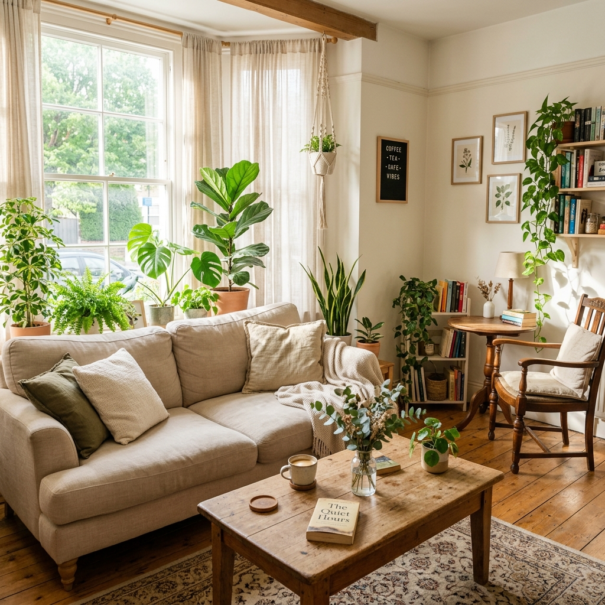
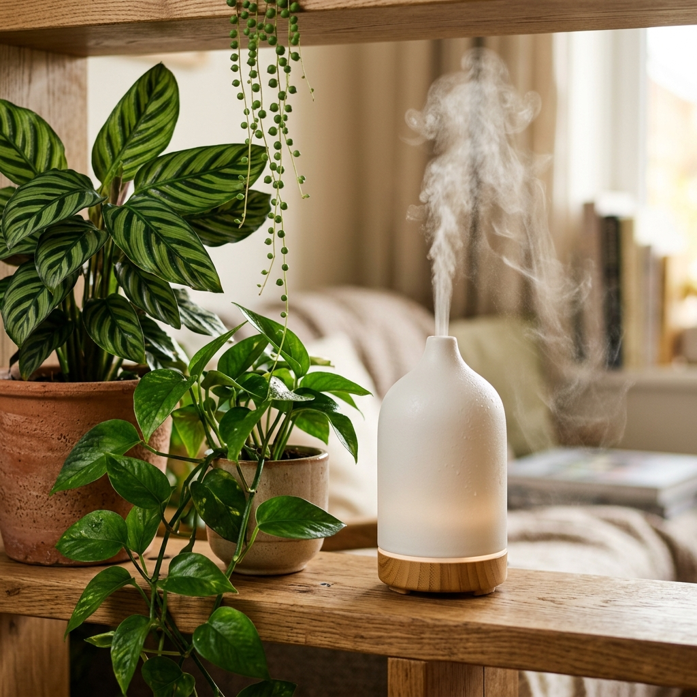
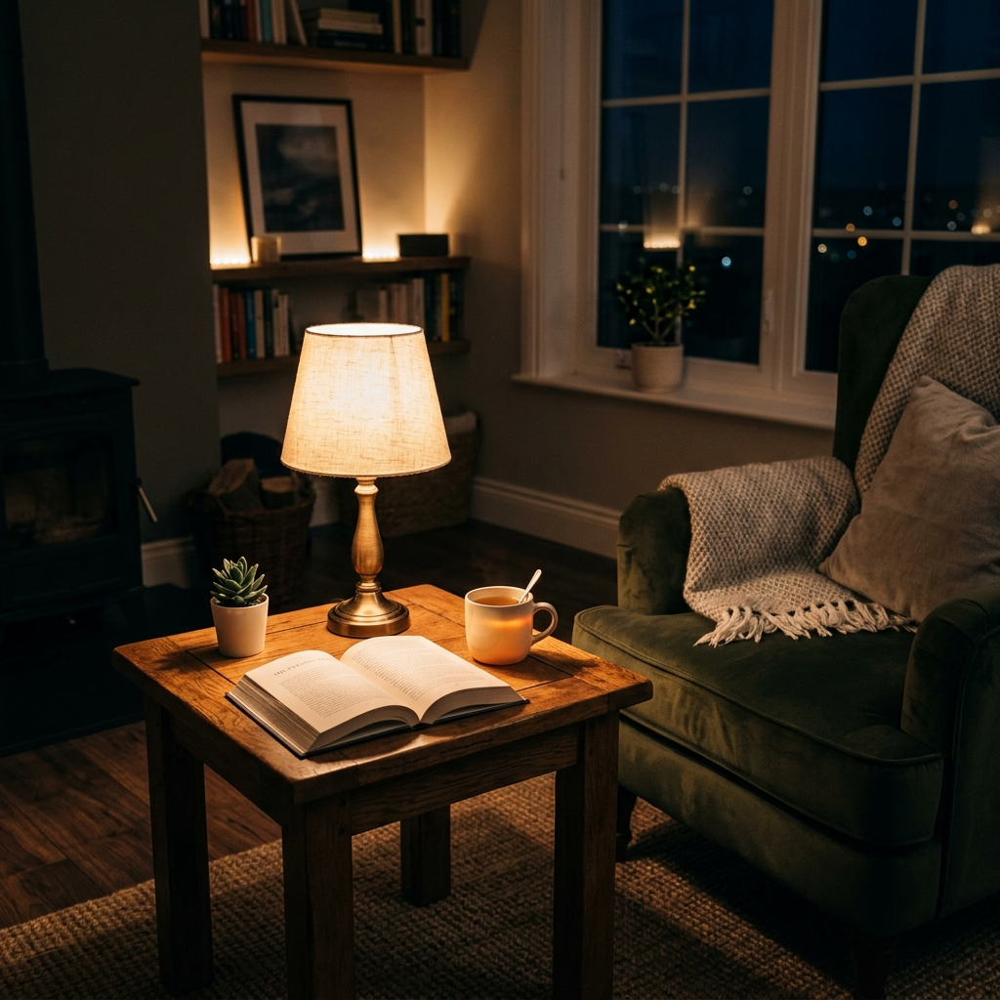
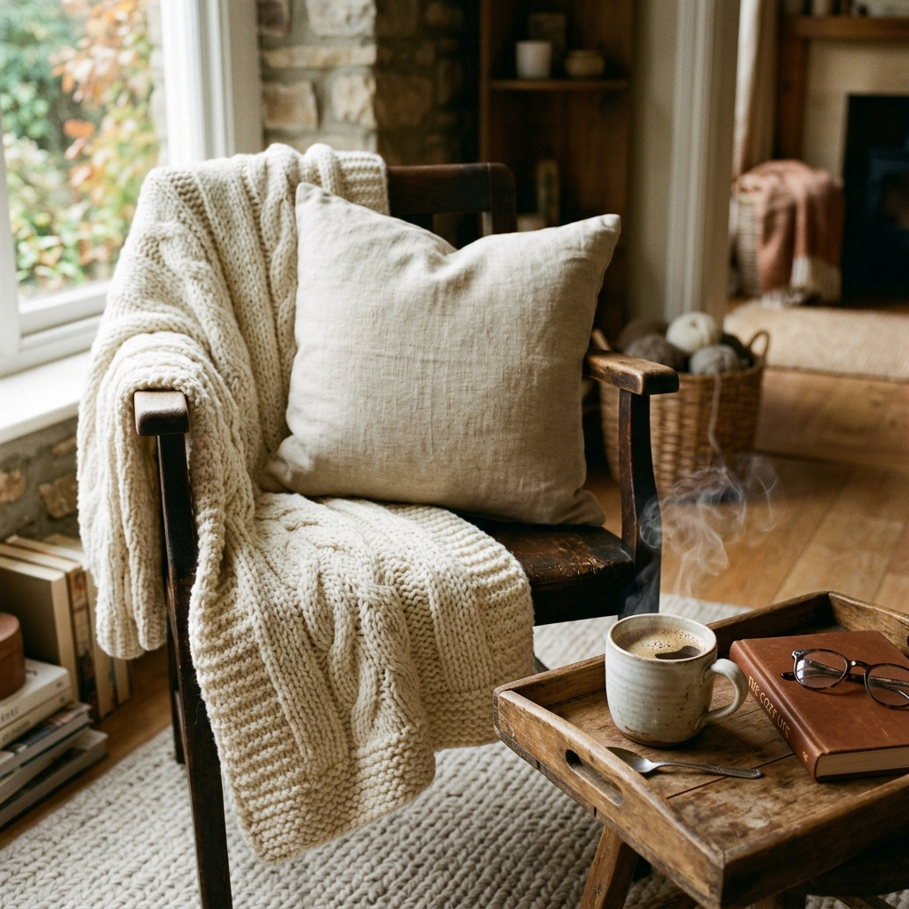

自分を責めるのは今日で終わりにしてください
それ、自分の能力や性格のせいだと
思っていませんか？
実は、うまくいかない本当の原因は、「家が散らかっているせい」や「なんとなく整っていない、居心地の悪い違和感」のせいかもしれません。
五感を使って、その閉塞感から抜け出す新しい方法がありました。
【先着5名様限定】特別モニター募集開始！
25年の空間づくりのプロが教える、
五感で脳を癒やし、人生の流れを変える
『オンラインお部屋診断＆プチ改造セッション』
「また職場でうまく立ち回れなかった…私が不器用だからだ」
「人間関係でいつも疲れてしまう…気を遣いすぎなのかな」
「やりたい事があるのに動けない…私って本当に意志が弱い」
足の踏み場がないほど散らかっているわけじゃないのに、家にいてもなんとなく居心地が悪く、違和感がある。
疲れて帰ってきたのに、整っていない部屋を見て「家事もちゃんとできないダメな自分」にさらに落ち込む。
毎日モヤモヤするその閉塞感、
決して「あなたが悪い」わけではありません。
散らかり、不快な光、動線の悪さ
無意識下で脳が休まらない状態
余裕がなくなり、日常の物事が空回り
仕事や人間関係で気を張り詰めた後、帰るべき家が乱れていたり居心地が悪かったりすると、目や肌から入る「ノイズ」によって脳は休まるどころか常に緊張状態を強いられます。
といった小さな違和感は、ジワジワと脳のエネルギーを奪い続けます。
脳が疲労しきっているから、心に余裕がなくなり、仕事や人間関係がうまくいかず、新しいことに挑戦する気力も奪われる。
この負のループにいる限り、気合いや根性で自分を変えようとしても限界があるのです。
ただ物を捨てる（断捨離する）だけでは、脳は癒されません。香り、光、音、手触りなど、五感を通して脳に「心地よい情報」を届ける「五感空間」を作ることが重要です。

観葉植物やアロマディフューザーが美しく調和した空間

温かみのある間接照明が灯る、夜のリラックス空間

肌触りの良いブランケットや、温かい飲み物で五感を癒やす
脳が心底リラックスし、エネルギーがフル充電される環境が手に入れば、自然と心に余裕が生まれます。
「頑張らなきゃ」と自分を奮い立たせなくても、人間関係も仕事もスルスルとうまく回り始めるのです。
五感ブレインコーチ
＼ あなたのための特別なセッション ／
提供スタイル： オンライン（Zoom）による 60分〜90分の個別コンサルティング
事前準備： お客様から事前に「悩んでいるお部屋（または特定の1箇所）」の写真や動画をお送りいただきます。
視覚的・動線的に「脳を疲れさせている原因（小さな違和感）」をプロの目で特定します。
どこから手を付ければ一番早く脳がスッキリするか、具体的な手順をアドバイスします。
部屋を「隠れ家カフェ」に近づけ、明日からできる小さな工夫（光、配置、香り等）を伝授します。
通常価格 11,000円
※終了後の簡単なアンケート提出（写真の匿名掲載許可など）へのご協力が条件となります。
もう、自分を責めるのはやめませんか？
あなたが一歩を踏み出し、心から安心できる空間を手に入れるための
お手伝いをさせてください。
※定員に達し次第、通常価格に戻ります。